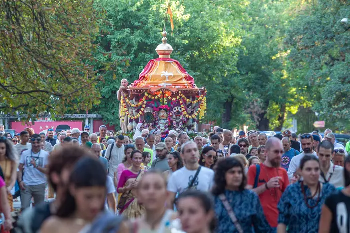
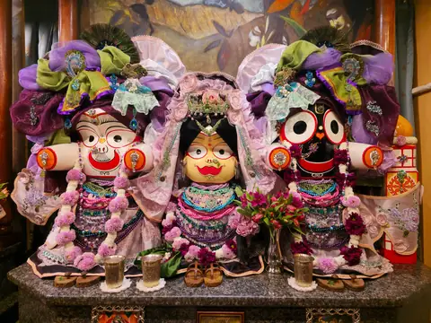
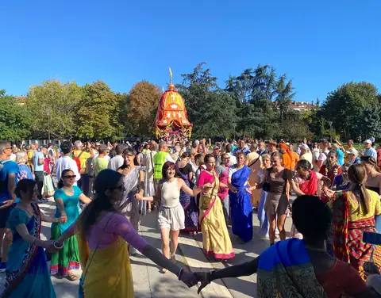
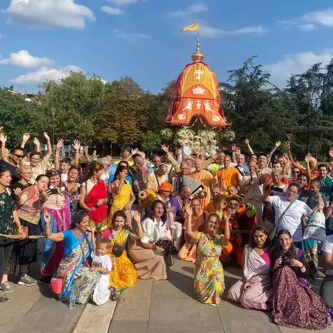

Храмът в София
Общество за Кришна съзнание в България
Обществото за Кришна съзнание (ОКС) е регистрирано вероизповедание, в България от 1991 г., част от Международното общество за Кришна съзнание (ИСКОН). Храмът в София е отворен за гости всеки ден.

Посетете ни
Храмът на ИСКОН в София
- Адрес
- гр. София, кв. „Малинова долина“, бул. „Климент Охридски“ 119
- Телефон
- 02 961 60 50
- Имейл
- info@krishnabg.com
Какво има в храма
- Всеки ден в 8:00: клас по Шримад Бхагаватам.
- В събота от 15:30 до 19:30: празнична програма, с киртан и лекция.
Часове на отваряне
| Понеделник | 7:30 до 9:00 и 18:00 до 18:30 |
|---|---|
| Вторник | 7:30 до 9:00 и 18:00 до 18:30 |
| Сряда | 7:30 до 9:00 и 18:00 до 18:30 |
| Четвъртък | 7:30 до 9:00 и 18:00 до 18:30 |
| Петък | 7:30 до 9:00 и 18:00 до 18:30 |
| Събота | 7:30 до 9:00 и 15:30 до 20:00 |
| Неделя | 7:30 до 9:00 и 18:00 до 18:30 |

Празници
Ратха ятра и празниците в храма
Ратха ятра се провежда в България от 1996 г. 31-вият фестивал е на 23.08.2026 (неделя), от 11:00 до 21:30, в Борисовата градина.
В храма се отбелязват Шри Кришна Джанмащами, Шрила Прабхупада Авирбхава, Гаура Пурнима и Рама Навами.
Пример: Шри Кришна Джанмащами, 26 август 2024
- 17:00 Бхаджан
- 18:00 Гаура арати
- 18:45 Абхишек
- 20:00 Лекция
- 00:00 Даршана и прасадам

Учение
Философията накратко
Ученията на Кришна съзнание отговарят на най-дълбоките въпроси на човека: Кой съм аз? Какъв е смисълът на живота? Какво е Бог?
В сърцевината на нашето учение стои разграничението между материята и духа. Тялото е материално и преходно, но в него обитава вечна духовна същност, душата. Когато душата забрави връзката си с Бога, тя се отъждествява с тялото и търси щастие в материалния свят, преминавайки през повтарящи се раждания и смърти според закона на кармата. Духовният живот започва с пробуждането от това забравяне.
Кришна, Бог като личност
Абсолютната Истина като върховна личност, изпълнена с любов и красота.
Душата, кармата и прераждането
Кои сме всъщност и как действат законите, които управляват живота ни.
Бхакти йога и маха-мантрата
Пътят на любящата преданост и възпяването на светите имена.
Свещените текстове
Бхагавад-гита, Шримад Бхагаватам и ведическата мъдрост.
Маха-мантрата
Харе Кришна, Харе Кришна,Кришна Кришна, Харе ХареХаре Рама, Харе Рама,Рама Рама, Харе Харе
Книги
Книгите на Шрила Прабхупада на български
Как да поръчате: пишете ни на info@krishnabg.com или се обадете на 02 961 60 50.

Бхагавад-гита каквато е
А. Ч. Бхактиведанта Свами Прабхупада · Свещени текстове
Най-известният и почитан духовен текст на Индия: разговорът между Кришна и Арджуна: с пълен санскритски текст, превод и подробен коментар на Шрила Прабхупада. Основополагащо четиво за всеки, който се интересува от ведическата мъдрост.
Шримад Бхагаватам
А. Ч. Бхактиведанта Свами Прабхупада · Свещени текстове
„Зрелият плод на ведическото дърво на знанието.“ Многотомно издание с превод и коментар, разкриващо науката за Бога и пътя на чистата преданост.
Шри Чайтаня-чаритамрита
А. Ч. Бхактиведанта Свами Прабхупада · Чайтаня
Житието и ученията на Шри Чайтаня Махапрабху: най-пълният богословски труд на традицията Гаудия ваишнавизъм.
Кришна: Върховната Божествена Личност
А. Ч. Бхактиведанта Свами Прабхупада · Кришна
Разказите за деянията на Кришна, предадени достъпно и увлекателно: обобщение на Десета песен на Шримад Бхагаватам.
Нектарът на предаността
А. Ч. Бхактиведанта Свами Прабхупада · Бхакти йога
Наука за същината на бхакти: как да развием чиста любяща преданост към Бога. Изложение на класическия труд на Рупа Госвами.
Нектарът на наставленията
А. Ч. Бхактиведанта Свами Прабхупада · Бхакти йога
Кратко, но дълбоко ръководство за духовния живот в единайсет стиха с коментар: практическа основа на предаността.
Шри Ишопанишад
А. Ч. Бхактиведанта Свами Прабхупада · Свещени текстове
Една от най-важните Упанишади: знанието, което ни доближава до Върховния Бог, с превод и коментар.
Науката за себепознанието
А. Ч. Бхактиведанта Свами Прабхупада · Въведение
Сборник от есета и разговори, които представят основите на Кришна съзнание за съвременния читател: отлично въведение.
Пътуване към себеоткриването
А. Ч. Бхактиведанта Свами Прабхупада · Въведение
Достъпни беседи за душата, съзнанието и духовния път: за всеки, който прави първите си стъпки.
Лесно пътуване до други планети
А. Ч. Бхактиведанта Свами Прабхупада · Въведение
За духовната природа на съзнанието и възможността то да се издигне отвъд материалния свят.
Отвъд раждането и смъртта
А. Ч. Бхактиведанта Свами Прабхупада · Прераждане
Какво се случва след смъртта? Ясно изложение за душата, прераждането и пътя към освобождение.
Съвършени въпроси, съвършени отговори
А. Ч. Бхактиведанта Свами Прабхупада · Въведение
Разговор между Шрила Прабхупада и млад търсещ: живо въведение в духовните въпроси на живота.
Учението на Бог Чайтаня
А. Ч. Бхактиведанта Свами Прабхупада · Чайтаня
Същината на ученията на Шри Чайтаня Махапрабху: основата на пътя на санкиртана.
По-висшият вкус
Бхактиведанта бук тръст · Кухня
За вегетарианството и духовната кухня, с рецепти за прасадам: храна, предложена на Бога.
Раджа-видя: Царят на знанието
А. Ч. Бхактиведанта Свами Прабхупада · Бхакти йога
За най-висшето и същевременно най-радостно знание: пътя на предаността, „царят на знанието“.
Възпявай и бъди щастлив
Бхактиведанта бук тръст · Мантра медитация
За силата на маха-мантрата Харе Кришна и практиката на медитация чрез възпяване на светите имена.
Контакти
Центрове и правен статут
София
- Адрес
- гр. София, кв. „Малинова долина“, бул. „Климент Охридски“ 119
- Телефон
- 02 961 60 50
- Имейл
- info@krishnabg.com
- Часове
- всеки ден 7:30 до 9:00; вечер 18:00 до 18:30; в събота 15:30 до 20:00
Бургас
Данни за контакт: в процес на допълване.
Правен статут
Обществото за Кришна съзнание (ОКС) е регистрирано вероизповедание: самостоятелно юридическо лице по Закона за вероизповеданията. Присъства в България от 1991 г.
- Статут
- Регистрирано вероизповедание, самостоятелно юридическо лице (чл. 14 до 15 от Закона за вероизповеданията)
- Съдебна регистрация
- Софийски градски съд, ф.д. № 1663/2003 г. (парт. № 7, том 1, стр. 60)
- ЕИК (единен идентификационен код)
- 000681328
- Управление
- Общо събрание · Национален съвет · Председател на Националния съвет